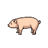

nombre es: pokacho
la vida es: 80
el tipo es: tierra
la fuerza es: 50
nombre es: tocinauro
la vida es: 120
el tipo es: fuego
la fuerza es: 40

nombre es: cauchin
la vida es: 100
el tipo es: aire
la fuerza es: 30